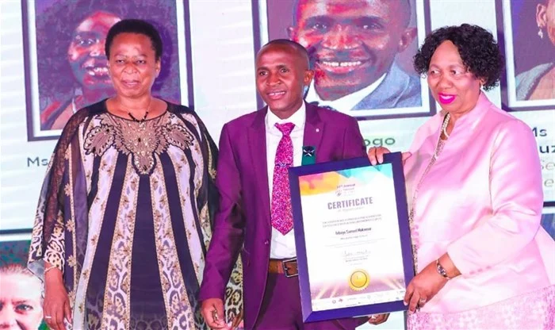

About TSM Math Club

TSM Maths Club, recognised in 2021 to help students improve their mathematical knowledge,
sharpen their critical and problem-solving skills. The club uses creative teaching methods to make Mathematics easier and enjoyable
The Club was founded by an award winning mathematic teacher from Mmabatho High School,
who was recognised as one of the country's best mathematics teacher by Minister of Education in 2022.


The founder also represented South Africa in China where he gainednew strategies and knowledge to improve maths in South Africa.
Our Mission
To make Maths easy and Fashionable
Our Vision
To Strengthen Mathematics as a discipline, and see more teachers and
students dominate the space of Mathematics
Our Purpose
TSM Maths Clubs aims To strengthen Mathematics education and see more teachers and students dominating in the space of Mathematics.
Our Purpose is To make Maths easy and fashionable. Encourage Analytical thinking and help Students tackles Challenging topics with confidence.
Our Goals
- Prepare Learners for Examinations
- Encourage confidence, discipline and a positive attitude towards Mathematics.
- Boost student performance in Mathematics
- Strenthen Problem-solving and Analytical thinking skills